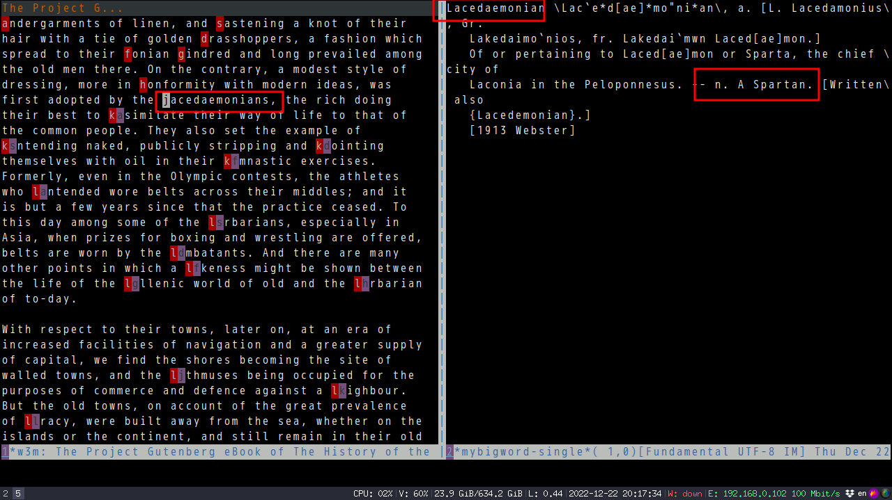

Use Emacs to read English classic books efficiently
Classic books is difficult to read because they have many new words.
Find the word's dictionary definition is tedios and breaks the flow.
I tried reading those books in iPad and Kindle. The experience is not very smooth because,
- It takes too much effort to select the word and send it to the dictionary. Particularly difficulty for me because I've got big fingers
- The dictionary popup overlaps with the book's content. Feels not comfortable
In Emacs,
- new words can be automatically highlighted
- The book's content and dictionary are displayed side by side
The Emacs plugin mybigword 0.2.4 provides a new command mybigword-big-words-in-current-windows which automatically highlight the new words in current window with hint. Type the hint, the word's definition is displayed in another window.
Screenshot before running M-x mybigword-big-words-in-current-windows,

After,

The hint UI is actually based on avy.
Every English word can be measure by word frequency named Zipf Scale (see http://crr.ugent.be/papers/van_Heuven_et_al_SUBTLEX-UK.pdf for more details).
Any word with ZipF less than the value of mybigword-upper-limit is regarded as new word.
In my setup, mybigword-upper-limit is 3.6.